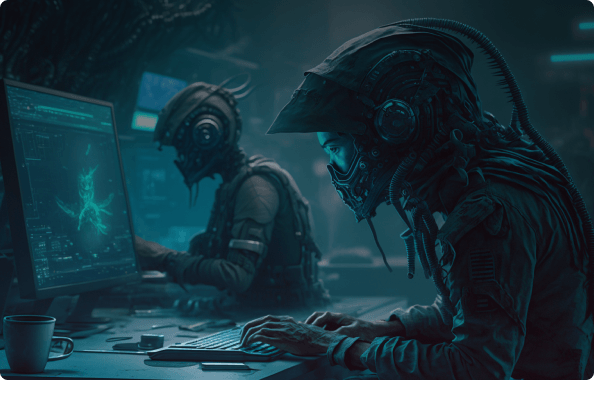

Pour les étudiants qui réussissent le concours d'entrée, les frais d'inscription à l'Université de l'Amitié Ivoiro-Sénégalaise sont fixés à X francs CFA par semestre. Ces frais couvrent les frais de scolarité, les livres et les matériaux pédagogiques nécessaires pour leur programme d'études. Les étudiants admis par concours peuvent également avoir accès à des bourses d'études et à des aides financières, en fonction de leurs performances académiques. L'Université de l'Amitié Ivoiro-Sénégalaise est engagée à offrir une éducation de qualité supérieure à tous ses étudiants. Les étudiants admis par concours ont accès à une équipe pédagogique hautement qualifiée et à des installations modernes pour leur formation en sciences.


Les étudiants qui reçoivent une bourse d'État pour leur admission à l'université ne paient pas de frais d'inscription. Cependant, ils sont tenus de maintenir une moyenne académique minimale pour continuer à bénéficier de leur bourse. L'Université de l'Amitié Ivoiro-Sénégalaise encourage ses étudiants à atteindre l'excellence académique en leur offrant un soutien personnalisé et des opportunités de développement professionnel. Les étudiants boursiers peuvent également bénéficier de programmes d'échanges universitaires à l'étranger, offrant ainsi une expérience d'apprentissage internationale unique et enrichissante.
L'Université de l'Amitié Ivoiro-Sénégalaise propose également des programmes d'apprentissage en ligne pour les étudiants qui ne peuvent pas étudier sur le campus. Pour les étudiants en ligne, les frais d'inscription sont de X francs CFA par semestre. Les étudiants en ligne ont accès à une plateforme d'apprentissage en ligne hautement interactive et à une équipe de tuteurs dédiés pour les aider à réussir leur programme d'études. Les frais d'inscription couvrent également les livres et les matériaux pédagogiques. Les étudiants qui souhaitent s'inscrire à un programme d'apprentissage en ligne peuvent le faire à tout moment de l'année, mais doivent respecter les dates limites de dépôt des travaux et des examens pour chaque semestre. Les étudiants en ligne ont également la possibilité de participer à des événements en direct organisés par l'université, tels que des conférences en ligne et des séminaires virtuels
